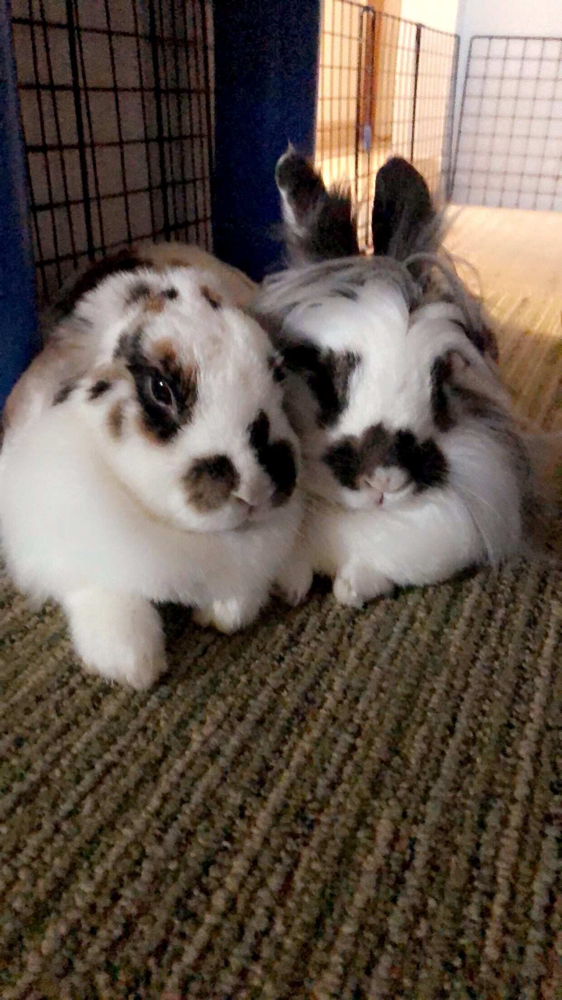

Hi, I'm Kelly Interiano, a Computer Engineering graduate from Bucknell University with a minor in Physics. I'm passionate about embedded systems, AI/machine learning, Unity and VR Development, and overall creating innovative solutions that bridge hardware and software development.
Bachelor of Science in Computer Engineering | Minor in Physics
Expected Graduation: May 2026 | GPA: 3.58
Raytheon | Tucson, AZ | Onboarding in Progress
Company Name | Location | Start Date - Present
Bucknell University | Lewisburg, PA | Aug 2025 - May 2026
North Atlantic Industries | Bohemia, NY | May 2025 - Aug 2025
Bucknell University | Lewisburg, PA | Jan 2025 - May 2026
Port Washington Children's Center | Port Washington, NY | Dec 2024 - Jan 2025
Port Washington Children's Center | Port Washington, NY | Jul 2024 - Aug 2024
Bucknell University | Lewisburg, PA | Sep 2023 - May 2026
Bucknell University | Lewisburg, PA | Aug 2023 - Dec 2025
Crumbl Cookies | Port Washington, NY | Jun 2023 - Jan 2024
Engineering EXCELerator Program, Bucknell University | Lewisburg, PA | Jun 2022 - Aug 2022
Carrie Palmer Weber Middle School | Port Washington, NY | Sep 2021 - Jun 2022
Girls Who Code | Remote | Aug 2021 - Oct 2021
Freelance | Port Washington, NY | Jun 2018 - Jun 2022
Issuing Organization | Month Year
C, C++, Python, Java, Assembly (Cortex-M/RISC-V), HTML/CSS, JavaScript, MATLAB, C#
Git, GitLab/GitHub, Visual Studio Code, Jenkins, Docker, CMake, Multisim, Claude Code
VxWorks RTOS, Embedded Systems, Circuit Testing, Oscilloscope, Soldering, FPGA-connected peripherals, SPI, GPIO, TTL channels
Unity, C#, Oculus Integration, Meta Quest/Oculus VR, VR Prototyping, XR Interaction, User Testing, Immersive Educational Applications
Machine Learning, TensorFlow/Keras, MobileNetV2, Data Augmentation, Model Evaluation, AI-Assisted Development, Prompting, Claude Code, ChatGPT
Technical Documentation, Team Collaboration, Leadership, Mentoring, Adaptibility, Time Management, Agile Development
Outside of my technical pursuits, I'm passionate about STEM education and mentoring the next generation of engineers. I enjoy playing soccer, spending time outdoors, and exploring new places. I believe in maintaining a balanced lifestyle that fuels both creativity and problem-solving abilities.

My bunnies, Hasi and Simba, who keep me grounded and remind me to find joy in simple things.
I'm currently in the process of onboarding for a Software Engineer I position at Raytheon, where I am excited to apply my background in embedded systems, software development, hardware-software integration, and AI/ML to mission-driven engineering work. As I transition into this next step after graduation, I plan to continue building meaningful technology that positively impacts society.
Download my resume for detailed experience and qualifications.
Download Resume